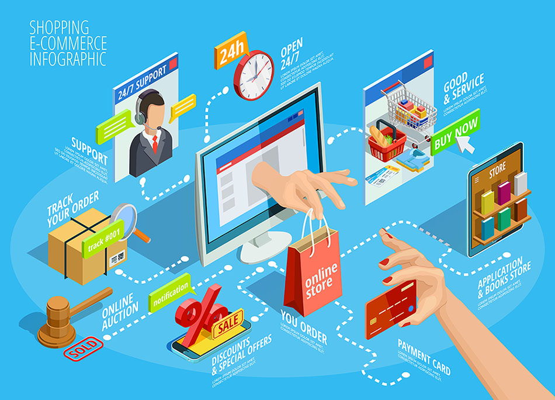

La revolución digital en la educación
Las tecnologías web han transformado radicalmente la educación,
tanto en la forma en que aprendemos y enseñamos, ahora es mas común tener acceso a recursos
educativos a nivel global y democratizando el aprendizaje. Plataformas de e-learning,
bibliotecas digitales y herramientas de colaboración en línea han permitido que el conocimiento
sea más accesible y personalizado.
Esta transformación no solo ha beneficiado a los estudiantes,
quienes ahora pueden aprender a su propio ritmo y desde cualquier lugar, sino también a los educadores,
que cuentan con nuevos métodos para impartir conocimiento y evaluar el progreso de sus alumnos.
Además, la capacidad de realizar clases virtuales y seminarios
en tiempo real ha reducido las barreras geográficas y económicas, ampliando las oportunidades
educativas para personas de todas las edades y contextos socioeconómicos...
Leer mas...
Comercio electrónico: una nueva era

Descubre cómo el e-commerce ha transformado los hábitos de consumo y las estrategias de negocio.
El comercio electrónico ha revolucionado la manera en que las empresas
operan y los consumidores compran, inaugurando una nueva era en el mundo de los negocios.
Gracias a las tecnologías web, las empresas pueden llegar a mercados globales sin la necesidad
de una presencia física, reduciendo costos operativos y ampliando su alcance de manera exponencial.
Los consumidores, por su parte, disfrutan de la comodidad de realizar
compras desde cualquier lugar y en cualquier momento, accediendo a una amplia variedad de productos y
servicios con tan solo unos clics. Esta transformación digital ha fomentado el desarrollo de nuevas
estrategias de marketing, como el uso de datos y analíticas avanzadas para personalizar la experiencia
de compra y mejorar la relación con el cliente.
Además, ha impulsado la creación de innovadores modelos de negocio,
desde suscripciones y servicios bajo demanda hasta marketplaces y plataformas de venta directa
entre consumidores. Sin duda, el e-commerce ha cambiado para siempre los hábitos de consumo y
ha obligado a las empresas a adaptarse rápidamente para mantenerse competitivas en un mercado
en constante evolución.
Leer mas...